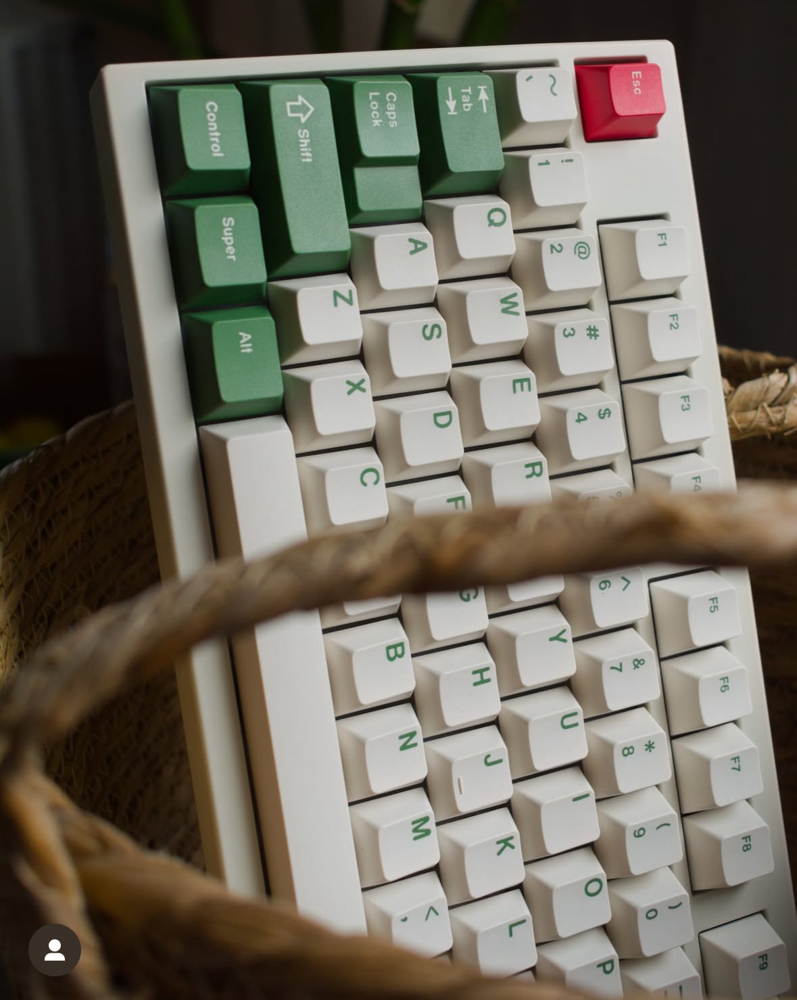

Transition Lite TKL
I think the Transition Lite is a great entry board for its $55 price tag excluding tax, shipping, etc.
I wanted a board that I could kind of tinker with to take me back to my first custom build experience.
Although it didn't really bring me the original joy and intrigue that got me into the hobby,
it sounds and feels pretty decent as far as plastic boards go.
I probably wouldn't recommend this to someone who is deep into the hobby, but for what it is, it's great.
Beige Transition Lite topped with GMK Hanami Dango, photo is from my Instagram @nsedbored.
Beige Transition Lite topped with GMK Hanami Dango, photo is from my Instagram @nsedbored.